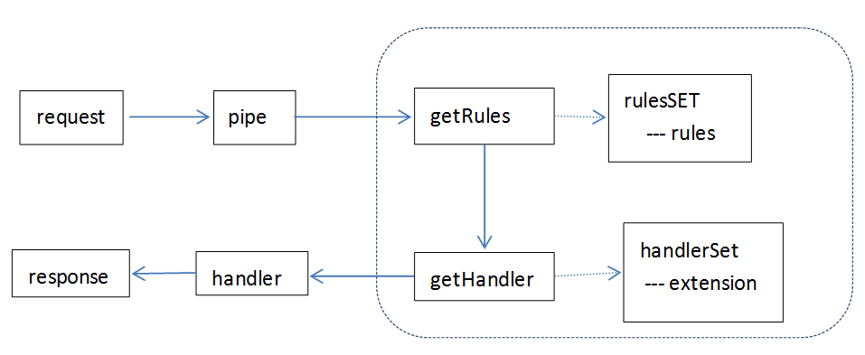

| 创建时间： | 2014/1/13 10:46 |
| 更新时间： | 2014/1/13 12:39 |
FCPIPE 使用说明
第一步 安装
npm install fcpipe -g
// 如有需要 更新fcpipe
npm update fcpipe- g
第二步 配置
- 如果默认配置满足需求可以跳过配置步骤
- 参考后面的配置说明
第三步 启动服务
1. 启动本地edp服务
edp ws start
确认访问路径 http://127.0.0.1:8848/nirvana-workspace/nirvana/main.html
如果路径或端口不一致在配置文件中修改
2. 启动fcpipe
fcpipe
第三步 验证
1. 访问本地开发环境
http://fctest.baidu.com:8000/nirvana-workspace/nirvana/main.html
如果能够正常访问，说明fcpipe安装并启动成功
2. 访问后端服务器环境
http://fctest.baidu.com:8000/nirvana/main.html?userid=241458
检查后端服务器是否正常访问
3. 访问联调模式
http://fctest.baidu.com:8000/nirvana/main.html?userid=241458&mod=debug
访问联调模式与后端服务器的唯一区别就是在url的search部分加上&mod=debug
注意；为了保证登录正常；每次访问前最好先走后端服务器环境；直接走联调方式可能会遇到权限验证失败问题!
context.request表示请求对象;context.response表示响应对象
var modType = 'dev';
exports.getRules = function(request) {
var rules = require('./fengchao-rules');
if (request.url.indexOf('nirvana/main.html') > -1 ) {
if (request.url.indexOf('mod=debug') > -1) {
modType = 'debug';
} else if (request.url.indexOf('mod=dev') > -1
|| request.url.indexOf('workspace') > -1
) {
modType = 'dev';
} else {
modType = 'backend';
}
}
if (modType in rules) {
return rules[modType];
} else {
return [];
}
};
rules.backend = [
{
path: 'log/fclogimg.gif',
handler: logHandler
},
{
path: '/',
handler: sendToEnd
}
{
path: 'request.ajax',
handler: function(context) {
var request = context.request;
var response = context.response;
var req = require('url').parse(request.url, true);
if (req.query.path == 'GET/nikon/abstract') {
var rst = mockjson.generate();
response.end(JSON.stringify(rst));
} else {
// 其它请求采用默认处理
nextRule(context);
}
}
}
FCPPIPE原理介绍
FCPIPE使用前向代理方式解决fengchao测试环境、线下凤巢、线上凤巢前端联调、测试问题。
1. 所有ajax请求及main.html必须通过UC验证后才能正确访问；
2. 权限验证要求path,host,port,castk必须合法;
3. Cookie和 refferer必须合法
4. 静态资源js/css/png等无需权限验证，但是只有asset可访问；
5. asset与src的文件名、目录结构无法一一对应;
6. 模板文件、样式文件需要反向解析..
7. …
各种失败方案
1. Fiddler前向代理 (需要设定大量反向解析规则)
2. Edp 反向代理 (无法设定规则)
3. Apache解析规则(规则约束大，权限无法绕过)
4. Proxy-部分模块代理(配置太复杂、通用性差)
FCPIPE 方案
1. 使用动态规则集合；根据请求自动模式解析
2. 自定义规则简单；支持扩展
3. 流程清晰；方面自定义扩展
4. 面向凤巢系统等商业系统的开发方式
FCPIPE流程
